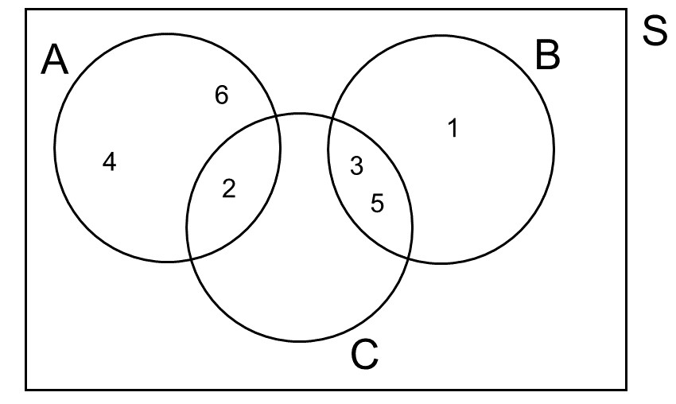
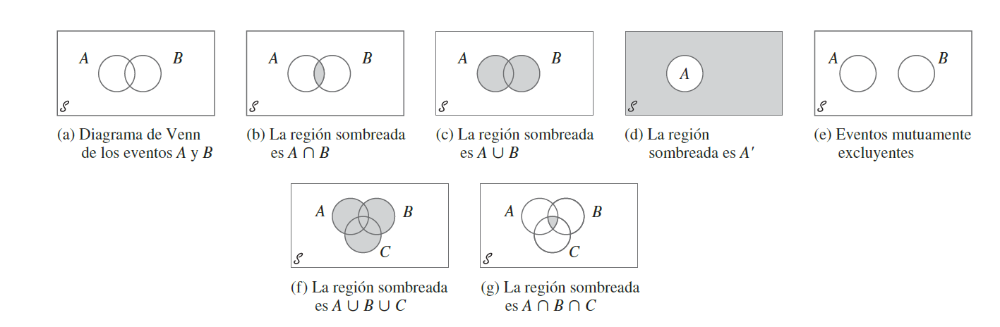
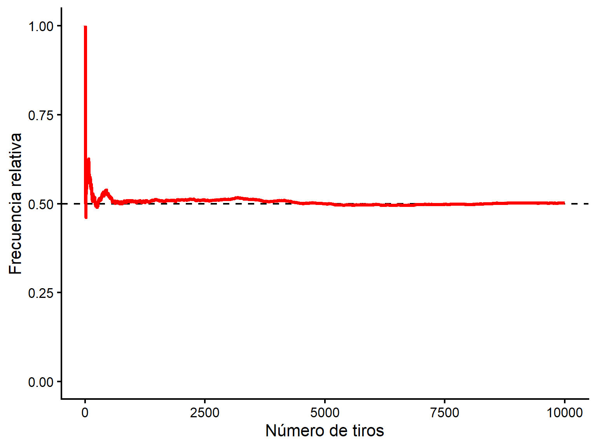
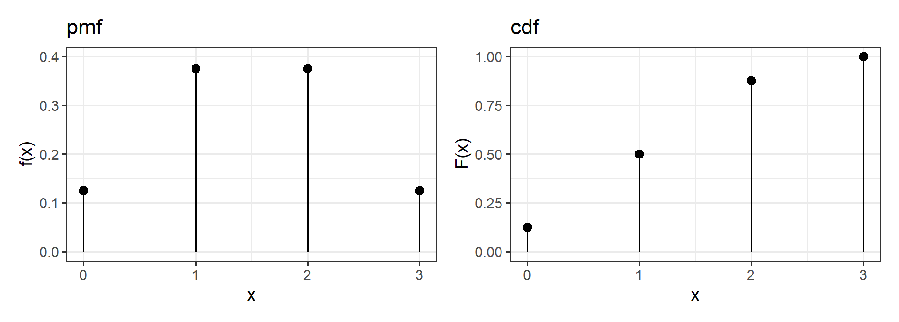
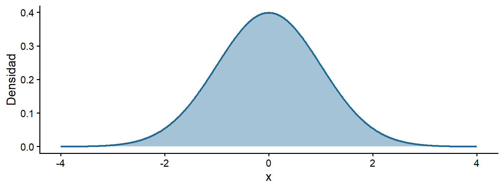
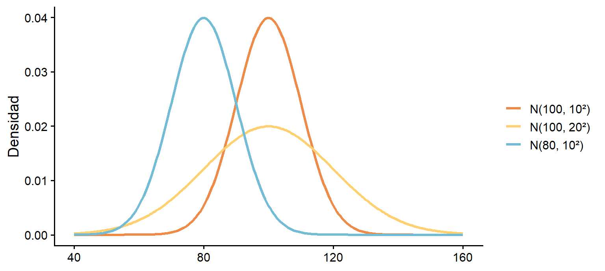
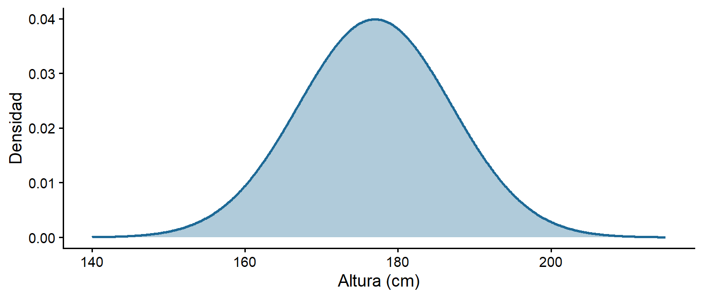
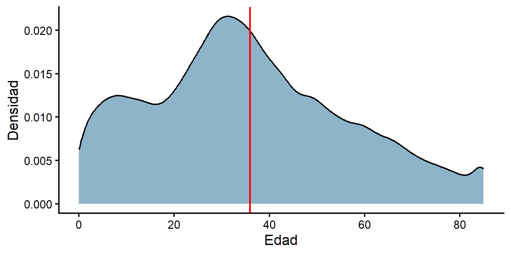
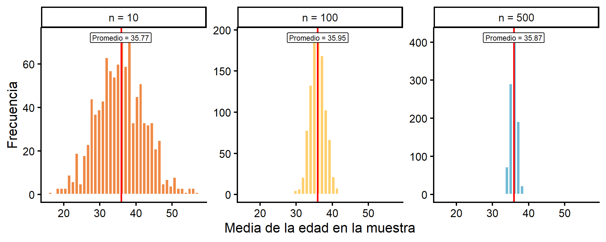

species island bill_len bill_dep
Adelie :152 Biscoe :168 Min. :32.10 Min. :13.10
Chinstrap: 68 Dream :124 1st Qu.:39.23 1st Qu.:15.60
Gentoo :124 Torgersen: 52 Median :44.45 Median :17.30
Mean :43.92 Mean :17.15
3rd Qu.:48.50 3rd Qu.:18.70
Max. :59.60 Max. :21.50
NA's :2 NA's :2
flipper_len body_mass sex year
Min. :172.0 Min. :2700 female:165 Min. :2007
1st Qu.:190.0 1st Qu.:3550 male :168 1st Qu.:2007
Median :197.0 Median :4050 NA's : 11 Median :2008
Mean :200.9 Mean :4202 Mean :2008
3rd Qu.:213.0 3rd Qu.:4750 3rd Qu.:2009
Max. :231.0 Max. :6300 Max. :2009
NA's :2 NA's :2 Clase 2: Probabilidad e Inferencia
Nivelación Estadística
Prof. Gabriel Duarte Zúñiga
Universidad Adolfo Ibáñez | DIAPP-2026
4 de junio de 2026
¡Bienvenidas y Bienvenidos!
🔁 Repaso Clase 1: Estadísticas Descriptivas en R
| Concepto | Definición | Función en R
|
Ejemplo de uso |
|---|---|---|---|
| Media | Promedio aritmético: suma de los valores dividida por \(n\) | mean(x, na.rm = T) |
mean(penguins$body_mass, na.rm = T) |
| Mediana | Valor central de los datos ordenados; más robusta ante outliers | median(x, na.rm = T) |
median(penguins$body_mass, na.rm = T) |
| Desv. Estándar | Distancia típica de cada observación respecto a la media | sd(x, na.rm = T) |
sd(penguins$body_mass, na.rm = T) |
| Percentil | Valor bajo el cual cae el \(p\)% de los datos | quantile(x, probs = p) |
quantile(penguins$body_mass, probs = c(.25, .75)) |
| Puntaje Z | N° de desviaciones estándar que separan una observación de la media | (x - mean(x)) / sd(x) |
(200 - mean(bdims$hgt)) / sd(bdims$hgt) |
| Correlación | Fuerza y dirección de la asociación lineal entre dos variables cuantitativas (\(-1\) a \(+1\)) |
cor(x, y) geom_point()
|
cor(penguins$body_mass, penguins$flipper_len) |
🔁 Repaso Clase 1: Estadísticas Descriptivas en R
Para obtener varias medidas de una sola vez utilizamos: summary()
🔁 Repaso: ¿Dónde Quedamos?
En la Clase 1 aprendimos a describir datos:
- Medidas de tendencia central (media, mediana) y variabilidad (varianza, desviación estándar).
- Visualización (histograma, densidad, boxplot) y asociación (correlación, scatterplot).
Pero la estadística descriptiva solo resume los datos que tenemos a mano (una muestra). La gran pregunta que abordaremos hoy es:
¿Cómo pasamos de lo que observamos en una muestra a conclusiones sobre toda la población?
Para ello requerimos de la inferencia estadística: usar la información de una muestra para sacar conclusiones sobre la población. Y para hacerlo de forma rigurosa, reconociendo que toda muestra trae consigo cierta incertidumbre, primero necesitamos entender en qué consiste la probabilidad.
🎯 Objetivos Clase 2
Los objetivos específicos de la clase 2 son:
- Comprender las nociones básicas de probabilidad y aplicarlas a ejemplos concretos.
- Conectar la probabilidad con las variables aleatorias y sus distribuciones (binomial y normal).
- Entender por qué una muestra genera incertidumbre y cómo el Teorema del Límite Central nos ayuda a manejarla.
- Construir e interpretar intervalos de confianza.
- Plantear una prueba de hipótesis sencilla, interpretar el p-valor y concluir.
¿Qué Veremos Hoy?
- Probabilidad y ejemplos aplicados.
- Variables aleatorias y distribuciones conocidas (binomial).
- La distribución normal.
- Muestreo, Teorema del Límite Central y error estándar.
- Intervalos de confianza, p-valor y prueba de hipótesis (t-test).
Metodología
Igual que en la Clase 1, alternaremos exposición breve con preguntas 🧠 y ejercicios guiados 💻 que resolveremos juntos.
Probabilidad
Probabilidad
El término probabilidad se refiere al estudio del azar y la incertidumbre en cualquier situación en la que diferentes sucesos pueden ocurrir.
Definición frecuentista: La probabilidad de un resultado está definida por la proporción de veces que ese resultado es observado a través de un alto número de repeticiones de procesos aleatorios:
\[Probabilidad = \frac{\#Eventos\ Favorables}{\#Eventos\ Totales}\]
Probabilidad (Agresti 2018)
En una muestra o experimento aleatorio, la probabilidad de que una observación tenga un resultado particular es la proporción de veces que ese resultado ocurriría en una secuencia muy larga de observaciones similares.
Probabilidad
- Dado que definimos probabilidad como una proporción, la probabilidad es un número entre 0 y 1 (o 0 y 100 si se expresa en %) que mide qué tan factible es que ocurra un resultado
- \(0\) = imposible
- \(1\) = seguro
- \(0.5\) = tan probable como no.
- La probabilidad puede entenderse como la frecuencia relativa de un resultado cuando repetimos un experimento muchas veces. Esto implica que las probabilidades se interpretan bajo un contexto de largo plazo. Por ejemplo, si un meteorólogo dice que la probabilidad de lluvia hoy es del 70%, esto significa que en una larga serie de días con condiciones atmosféricas como las de hoy, llueve el 70% de los días.
Idea clave
Si lanzamos una moneda equilibrada muchísimas veces, la proporción de caras se acercará a \(0.5\). Esa proporción de largo plazo es la probabilidad de obtener una cara.
Proceso Aleatorio
En un proceso aleatorio hay más de un posible resultado y la predicción de este está sujeto a variabilidad:
-
Ejemplos Clásicos:
- Tirar una moneda.
- Tirar un dado.
Se puede pensar como un proceso donde el resultado es probabilístico (o estocástico) y no determinístico. Es decir, hay incertidumbre en el resultado.
Espacio Muestral
- El espacio muestral es el conjunto de todos los posibles resultados de un proceso aleatorio. Se denota con el símbolo \(S\). Por ejemplo:
- Dados: \(S=\{1,2,3,4,5,6\}\).
- Moneda: \(S=\{C,S\}\).
Evento
Un evento es un subconjunto del espacio muestral.
-
Para el caso del lanzamiento de un dado, digamos que:
- \(A\) representa el evento de que al tirar un dado el resultado sea un número par: \(A=\{2,4,6\}\).
- \(B\) representa el evento de que al tirar un dado el resultado sea un número impar: \(B=\{1,3,5\}\).
- \(C\) representa el evento de que al tirar un dado el resultado sea un número primo: \(C=\{2,3,5\}\).
Diagrama de Venn
Lo anterior se pueden representar visualmente mediante un Diagrama de Venn: Una gráfica que usa círculos superpuestos para ilustrar las relaciones lógicas entre dos o más conjuntos de elementos.

🧠 Pregunta N° 1
Lanzamos un dado equilibrado de 6 caras una vez.
¿Cuál es la probabilidad de obtener un número mayor que 4?
- 2/6 ≈ 0,33.
- 4/6 ≈ 0,67.
- 1/6 ≈ 0,17.
- 3/6 = 0,5.
Complemento de un Evento
- Definición: El complemento de un evento son todos los resultados en el espacio muestral que no corresponden al evento mismo.
- Ejemplo: el complemento del evento \(C\) es el conjunto de resultados de tirar un dado que no corresponden a números primos.
- Notación: \(C'\).
- \(\Large C^c:\{1,4,6\}\).
- En
Rpodemos usar la funciónsetdiff()para obtener el complemento de un evento, especificando primero el espacio muestral y luego el evento:
Unión de Eventos
- Definición: La unión de dos eventos \(A\) y \(B\) es el evento formado por todos los resultados que están en \(A\), en \(B\) o en ambos; es decir, los resultados que pertenecen a al menos uno de los dos eventos.
- Ejemplo: La unión de los eventos \(A\) y \(C\) es el conjunto de resultados posibles de tirar un dado que son números pares, o primos, o ambos.
- Notación: \(A \cup C\).
- \(A \cup C: \{2,3,4,5,6\}\).
- En
Rpodemos usar la funciónunion()para obtener la unión de dos eventos:
Intersección de Eventos
- Definición: La intersección de dos eventos \(A\) y \(B\) es el evento que consiste en todos los resultados que están tanto en A como en B.
- Ejemplo: La intersección de los eventos \(A\) y \(C\) es el conjunto de resultados posibles de tirar un dado que son números pares Y primos al mismo tiempo.
- Notación: \(A \cap C\).
- \(A \cap C: \{2\}\).
- En
Rpodemos usar la funciónintersect()para obtener la intersección de dos eventos:
Eventos Mutuamente Excluyentes
Definición: Los eventos mutuamente excluyentes son eventos que no pueden ocurrir al mismo tiempo.
Ejemplo: El evento \(A\) y el evento \(B\) son mutuamente excluyentes porque el resultado de tirar un dado no puede ser par e impar al mismo tiempo.
Notación: \(A \cap B = \emptyset\)
Los eventos \(A\) y \(C\) no son mutuamente excluyentes porque el número 2 es tanto par como primo.
Eventos Independientes
-
Dos eventos son independientes cuando el resultado de uno no afecta la probabilidad del otro.
- Por ejemplo: Que la primera moneda salga cara no afecta la probabilidad de que salga cara o sello en el segundo lanzamiento.
Por definición, los eventos \(A\) y \(B\) son eventos independientes, si y solo si la probabilidad de que ocurran ambos (es decir, su intersección) corresponde a la multiplicación de sus probabilidades individuales:
\[P(A \cap B) = P(A) \times P(B)\]
- Ejemplo: \(P(\text{dos caras seguidas}) = 0.5 \times 0.5 = 0.25\).
Nota
La independencia será la clave para conectar la probabilidad con las distribuciones que veremos a continuación.
🧠 Pregunta N° 2
Lanzamos el mismo dado equilibrado dos veces seguidas. Cada lanzamiento es independiente del otro.
¿Cuál es la probabilidad de obtener un número mayor que 4 en ambos lanzamientos?
- 2/6 ≈ 0,33.
- 4/6 ≈ 0,67.
- 1/9 ≈ 0,11.
- 1/36 ≈ 0,03.
Resumen Probabilidad
Conceptos Importantes (Devore 2016)
- Un proceso aleatorio (en libros de estadística, llamado también experimento) es cualquier acción o proceso cuyo resultado está sujeto a la incertidumbre.
- El espacio muestral de un experimento, denotado por \(S\), es el conjunto de todos los posibles resultados de dicho experimento.
- Un evento es cualquier recopilación (subconjunto) de resultados contenidos en el espacio muestral \(S\).
- Sea que \(\phi\) denote el evento nulo (el evento sin resultados). Cuando \(A \cap B = \phi\), se dice que A y B son eventos mutuamente excluyentes o disjuntos.
- El complemento de un evento \(A\), denotado por \(A'\), es el conjunto de todos los resultados en \(S\) que no están contenidos en A.
- La unión de dos eventos \(A\) y \(B\), denotados por \(A \cup B\) y leída como A o B, es el evento que consiste en todos los resultados que están en A o en B o en ambos eventos, es decir, todos los resultados en al menos uno de los eventos: \(P(A \cup B) = P(A) + P(B) - P(A \cap B)\). También \(A \cup B\) se puede descomponer en dos eventos excluyentes: \(A\) y \(B \cap A'\); la última es la parte de \(B\) que queda afuera de \(A\), por lo que \(P(A \cup B) = P(A) + P(B \cap A')\).
- La intersección de dos eventos \(A\) y \(B\), denotada por \(A \cap B\) y leída como A y B, es el evento que consiste en todos los resultados que están tanto en A como en B.
Resumen Probabilidad

Fuente: (Devore 2016)
Aplicando el Complemento
Consideremos el lanzamiento de 2 monedas. En este caso, el espacio muestral sería \(S = \{CC,\ CS,\ SC,\ SS\}\) (4 resultados igualmente probables)
-
Calculemos las siguientes probabilidades:
\(P(\text{exactamente una cara (X=1)}) = \dfrac{2}{4} = 0.5\)
\(P(\text{al menos una cara}(X \geq 1))\): en vez de contar \(\{CC, CS, SC\}\), usamos el complemento de ese evento (que en este caso, sería \(P(X < 1)\). El único caso sin caras es \(\{SS\}\):
\[P(\text{al menos una cara}) = 1 - P(\text{ninguna cara}) = 1 - \tfrac{1}{4} = 0.75\]
Tip
Muchas veces puede ser útil usar el complemento de un evento para calcular probabilidades: \(P(A) = 1 - P(A')\).
Proceso Aleatorio con Repeticiones
- Asumamos que repetimos el proceso aleatorio de tirar una moneda y que registramos como evento \(X\) el número de veces que sale cara en \(n\) lanzamientos de moneda. Entonces:
\[\Large P(Cara)=\lim_{n\to\infty}\frac{X}{n}\]
\[\Large P(Cara)=\frac{1}{2}\]
Lanzar 1 Vez una Moneda
- Definamos un vector moneda con los posibles eventos y simulemos un solo lanzamiento de esa moneda.
- Para hacerlo en R, debemos utilizar la función
sample()considerando los siguientes argumentos:-
x: Un vector de uno o más elementos entre los cuales elegir, o un número entero positivo. -
size: Un número entero no negativo que indica el número de elementos a elegir. -
replace: Un valor lógico que indica si es que el muestreo debe ser con reposición (= T) o no (= F).
-
- Además, seteamos una semilla con la función
set.seed()para definir un proceso pseudo-aleatorio que nos permita replicar los mismos resultados. En la medida que se utilice la misma semilla, todos los procesos aleatorios que se hagan en adelante serán replicables siempre y cuando utilicen la misma semilla (en la práctica, cualquier número natural).
Repitamos 20 Veces Este Proceso
- Dados estos resultados, vemos que \(P(Cara)=\frac{11}{20}=55\%\)
Repitamos 5.000 Veces Este Proceso
- En este caso vemos que \(P(Cara)=\frac{2499}{5000}=49,98\%\)
Frecuencia Relativa Acumulada de 10.000 repeticiones

La proporción de caras se acerca a 0.5 a medida que \(n\) crece, tal como vimos previamente. A más repeticiones, más cerca del valor verdadero. Recordar que la probabilidad implicaba pensar en un resultado de largo plazo, es decir, con varias repeticiones.
💻 Simular lanzamientos
Anteriormente ya calculamos que la probabilidad de obtener un número mayor que 4 en el lanzamiento de un dado es \(2/6 \approx 0{,}33\). Confirmémoslo simulando 1000 lanzamientos de un dado y observando la frecuencia relativa de cada resultado (también puede usar la función prop.table() para sacar proporciones):
Variables Aleatorias y Distribuciones
Variables Aleatorias
El concepto de variable aleatoria nos permite pasar de los resultados experimentales a una función numérica de los resultados.
-
Existen fundamentalmente dos tipos diferentes de variables aleatorias:
- Variables aleatorias discretas
- Variables aleatorias continuas
Así, una función que asigna un resultado numérico a un proceso aleatorio se conoce como variable aleatoria.
Variables Aleatorias Discretas
Para una variable aleatoria discreta, estos resultados numéricos toman valores aislados (entre dos números no existe ninguno intermedio) y los posibles valores son finitos.
Usaremos letras mayúsculas, como \(X\), \(Y\), y \(Z\), para representar variables aleatorias y minúsculas ( \(x\), \(y\), y \(z\)) para indicar los resultados observados.
Definamos el siguiente proceso aleatorio: Tirar 3 veces una misma moneda y \(X = \text{N° de caras}\)
En este ejemplo, el espacio muestral tiene 8 resultados, y \(X\) puede tomar los valores \(0, 1, 2, 3\):
\[\{\underbrace{SSS}_{0},\ \underbrace{CSS, SCS, SSC}_{1},\ \underbrace{CCS, CSC, SCC}_{2},\ \underbrace{CCC}_{3}\}\]
- Así pasamos de “caras y sellos” a números sobre los que podemos calcular probabilidades.
Distribución de Probabilidad
La distribución de una variable aleatoria nos dice qué probabilidad tiene cada valor posible. Para \(X = \text{N° de caras en 3 lanzamientos}\):
| \(x\) | 0 | 1 | 2 | 3 |
|---|---|---|---|---|
| \(P(X = x)\) | 1/8 | 3/8 | 3/8 | 1/8 |
- Todas las probabilidades son \(\geq 0\).
- La suma de todas las probabilidades es 1.
Función Masa de Probabilidad (pmf)
La función que asigna una probabilidad a cada valor de una variable discreta se llama función de masa de probabilidad (pmf).
PMF y CDF
-
PMF: La distribución de probabilidad o función de masa de probabilidad de una variable discreta se define para cada número \(x\) como \(p(x) = P(X = x)\)
- Es decir, para cada valor posible \(x\) de la variable aleatoria, la función de masa de probabilidad especifica la probabilidad de observar dicho valor cuando se realiza el proceso aleatorio
-
CDF: La función de distribución acumulada \(F(x)\) de una variable aleatoria discreta \(X\) con función de masa de probabilidad \(p(x)\) se define para cada número \(x\) como: \[F(x) = P(X \leq x) = \sum_{y: y\leq x} p(y)\]
- Es decir, que para cualquier número \(x\), \(F(x)\) es la probabilidad de que el valor observado de \(X\) sea menor o igual a \(x\).
Aplicando la pmf
- Digamos que \(X\) es una variable aleatoria discreta que representa el número total de caras en 3 tiros de moneda. ¿Cuál es \(P(X=2)\)?
\(P(X=2)=\frac{3}{8}=0.375\)
| x | 0 | 1 | 2 | 3 |
|---|---|---|---|---|
| \(\small P(X=x)=f(x)\) | \(f(0)\)=0,125 | \(f(1)\)=0,375 | \(f(2)\)=0,375 | \(f(3)\)=0,125 |
Probemos haciendo el experimento 10.000 veces:
Función de Distribución Acumulada (cdf) y pmf
| x | 0 | 1 | 2 | 3 | |
|---|---|---|---|---|---|
| pmf | \(\small P(X=x)=f(x)\) | \(f(0)\)=0,125 | \(f(1)\)=0,375 | \(f(2)\)=0,375 | \(f(3)\)=0,125 |
| cdf | \(\small P(X<=x)=F(x)\) | \(F(0)\)=0,125 | \(F(1)\)=0,5 | \(F(2)\)=0,875 | \(F(3)\)=1 |

PMF y CDF en R
- El paquete
statspermite calcular fácilmente las funciones de probabilidad (pmf) y las funciones de probabilidad acumulada (cdf). La sintaxis general es:prefijo\(+\)distrdondedistres el sufijo de la abreviación de la distribución de probabilidad (por ejemplo,binompara la binomial,normpara la normal, y así sucesivamente); mientras que el \(prefijo\) puede ser uno de los siguientes valores:-
\(d\) para la pmf/pdf. En
Rse le llama density -
\(p\) para la cdf. En
Rse le llama distribution function -
\(q\) para los cuantiles. En
Rse le llama quantile function -
\(r\) para generar números aleatorios según la distribución indicada. En
Rse le llama random variates o random generation
-
\(d\) para la pmf/pdf. En
La Familia de Funciones de Distribución en R
R tiene una familia de funciones para cada distribución. Para la binomial, el sufijo es binom:
| Prefijo | Pregunta que responde | Función Ejemplo |
|---|---|---|
d |
¿Probabilidad de un valor exacto? En el caso discreto \(P(X=x)\) y altura de la curva si es continua | dbinom() |
p |
¿Probabilidad acumulada? \(P(X \leq x)\) | pbinom() |
q |
¿Qué valor deja una probabilidad acumulada dada? | qbinom() |
r |
Generar valores aleatorios | rbinom() |
Tip
Recuerden que el mismo patrón aplica a la distribución normal que veremos más adelante (dnorm, pnorm, …) y a otras distribuciones. ¡Solo cambia el sufijo!
Distribución Binomial
Un proceso aleatorio sigue una distribución binomial si se cumplen las siguientes 4 condiciones (Devore 2016):
- El experimento consta de una secuencia de \(n\) experimentos más pequeños llamados ensayos, donde \(n\) se fija antes del experimento.
- Cada ensayo puede dar por resultado uno de los mismos dos resultados posibles (ensayos dicotómicos) los cuales se denotan como éxito (\(S\)) y como falla (\(F\)).
- Los ensayos son independientes entre sí, de modo que el resultado en un ensayo particular no influye en el resultado de cualquier otro ensayo.
- La probabilidad de éxito \(P(S)\) es constante de un ensayo a otro. Esta probabilidad se denota por \(p\).
Tal y como se mencionó anteriormente, el lanzamiento de una moneda cumple precisamente con estas características, por lo que sigue una distribución binomial.
-
Por ejemplo, el proceso aleatorio de lanzar 3 monedas y contar la cantidad de caras obtenidas cumple estas 4 condiciones:
- \(n = 3\)
- \(p = 0.5\)
- éxito = “cara”.
Aplicación en R: dbinom()
- Siguiendo con el ejemplo de la moneda, para calcular la probabilidad de obtener 2 caras en 3 lanzamientos de moneda, podemos utilizar la función
dbinom()de la siguiente manera, sabiendo que \(x = 2\), \(n = 3\) y \(p = 0.5\):
- El resultado es 0.375 = 3/8, exactamente lo que habíamos contado en la tabla. Este cálculo directo nos ahorra tener que enumerar el espacio muestral del proceso aleatorio: \(\{CCC,\color{Red}{CC}S,\color{Red}{C}S\color{Red}{C},S\color{Red}{CC},CSS,SCS,SSC,SSS\}\).
Aplicación en R: pbinom()
- Si ahora quisiéramos calcular cuál es la probabilidad de tener 1 cara o menos en los mismos 3 lanzamientos, podemos utilizar la función
pbinom()de la siguiente manera:
\(\{CCC,CCS,CSC,SCC,\color{Red}CSS,S\color{Red}CS,SS\color{Red}C,\color{Red}{SSS}\}\).
¿Y si quisiéramos obtener la probabilidad de obtener al menos 1 cara?
Para responder a ello, podemos usar el complemento: \(P(X \geq 1) = 1 - P(X = 0)\).
pbinom(0, 3, 0.5)entrega \(P(X \leq 0)\), que aquí es igual a \(P(X = 0)\):
Aplicación en R: qbinom()
-
La función
qbinom()enRpermite encontrar el valor de una variable binomial asociado a una probabilidad acumulada determinada. Es decir, calcula el cuantil (o percentil) de la distribución binomial. Los argumentos básicos de la función son:-
p: La probabilidad acumulada. -
size: El número de ensayos (lanzamientos de la moneda). -
prob: La probabilidad de éxito en cada ensayo (probabilidad de obtener cara en cada lanzamiento).
-
qbinom(p, size, prob)devuelve el menor valor de \(k\) tal que la probabilidad acumulada \(P(X\leq k)\) sea al menos \(p\), donde \(X\) es una variable aleatoria binomial con parámetrossizeyprobPor los ejercicios anteriores, sabemos que \(P(X\leq 0) = 0.125\), \(P(X\leq 1) = 0.5\), \(P(X\leq 2) = 0.875\) y \(P(X\leq 3) = 1\)
Por lo tanto, si queremos saber hasta qué punto concreto de los valores que podría tomar \(X\) se acumula el 87.5% de la probabilidad, debemos ejecutar lo siguiente:
💻 Aplicación: Distribución Binomial
Una prueba tiene 5 preguntas de verdadero/falso. Un estudiante responde al azar (\(p = 0.5\) de acertar cada una). Complete el código para calcular la probabilidad de acertar exactamente 3:
Pista
La pregunta dice “exactamente 3”, así que usamos el prefijo d (dbinom).
De lo Discreto a lo Continuo
La distribución binomial es discreta: \(X\) toma valores separados (0, 1, 2, 3…).
Pero muchas variables son continuas, es decir, pueden tomar cualquier valor en un rango (altura, ingreso, temperatura).
- En variables continuas ya no preguntamos por \(P(X = x)\) exacto (es prácticamente 0), sino por la probabilidad de caer en un intervalo, que corresponde al área bajo la curva de su función de densidad, es decir, principalmente nos interesamos en calcular probabilidad mediante
pfunciones (ejemplo:pnorm()).
La distribución continua más importante (y protagonista para introducir reglas y conceptos de inferencia estadística) es la distribución normal.
La Distribución Normal
La Distribución Normal
Es una distribución continua con forma de campana simétrica.
-
Se describe con dos parámetros:
- \(\mu\) (media): dónde está el centro.
- \(\sigma\) (desviación estándar): qué tan ancha es.
Se abrevia \(X \sim \mathcal{N}(\mu, \sigma^2)\).
En ella se cumple que media = mediana = moda.

El Efecto de los Parámetros
\(\mu\) mueve la curva hacia la izquierda o derecha, mientras que \(\sigma\) la hace más ancha o angosta:

Ejemplo: La Altura de una Población
Supongamos que la altura (en cm) de una población se distribuye de forma normal con media 177 y desviación estándar 10:
\[X \sim \mathcal{N}(177,\ 10^2)\]

Queremos calcular probabilidades sobre la altura usando pnorm().
Calcular Probabilidades con pnorm()
- ¿Cuál es la probabilidad de que alguien mida menos de 160 cm con la distribución anterior?
Sabemos que pnorm() entrega el área a la izquierda (la cdf, \(P(X \leq x)\)):
Por lo tanto, hay un 4.5% de probabilidad de medir menos de 160 cm.
Calcular Probabilidades con pnorm()
- ¿Cuál es la probabilidad de medir más de 180 cm?
Ahora necesitamos saber el área a la derecha, es decir, el complemento:
💻 Ejercicio Guiado: Normal
Con la misma distribución de altura \(\mathcal{N}(177, 10^2)\), complete el código para calcular la probabilidad de medir entre 160 y 180 cm.
Pista: es el área a la izquierda de 180 menos el área a la izquierda de 160.
El resultado es 0.573: poco más de la mitad de la población mide entre 160 y 180 cm.
Puntaje Z y la Regla Empírica
Recordemos de la Clase 1 el puntaje Z, el cual mide a cuántas desviaciones estándar está un valor de la media: \[z = \frac{x - \mu}{\sigma}\]
En cualquier distribución con forma de campana se cumple la Regla Empírica:
| Rango | % de los datos |
|---|---|
| \(\mu \pm 1\sigma\) | ≈ 68% |
| \(\mu \pm 2\sigma\) | ≈ 95% |
| \(\mu \pm 3\sigma\) | ≈ 99.7% |
Estos porcentajes son el área bajo la curva normal, y serán la base para construir los intervalos de confianza que veremos más adelante.
🧠 Pregunta N° 3
La altura sigue una \(\mathcal{N}(177, 10^2)\). Una persona mide 197 cm.
¿Qué podemos decir de su puntaje Z?
- z = 2: está a 2 desviaciones sobre la media, entre el 2,5% más alto.
- z = 2: es un valor imposible bajo esta distribución.
- z = 20: está muy lejos de la media.
- z = 0,5: es un valor muy común.
Inferencia: De la Muestra a la Población
Recordar: Población vs. Muestra
Población (\(N\)): el grupo completo que nos interesa (por ejemplo, todos los hogares de Chile).
Muestra (\(n\)): un subconjunto de la población que efectivamente observamos.
Un parámetro describe a la población (la media real \(\mu\)). Casi nunca lo conocemos.
Un estadístico se calcula desde la muestra (la media muestral \(\bar{x}\)). Es nuestra estimación del parámetro.
Tip
Hacemos inferencia: usamos el estadístico de una muestra para sacar conclusiones sobre el parámetro de la población.
El Problema: la Incertidumbre
Si tomamos otra muestra, obtendremos una media distinta. Y otra más, otra distinta.
Cada muestra entrega una estimación algo diferente: existe variabilidad muestral.
¿Cómo se comportan todas esas medias muestrales si repitiéramos el muestreo muchísimas veces?
La respuesta es uno de los resultados más importantes de la estadística: el Teorema del Límite Central.
Teorema del Límite Central (TLC)
El TLC dice que, si tomamos muchas muestras de tamaño \(n\) y calculamos la media de cada una:
- La distribución de esas medias tiende a una distribución normal…
- …aunque la población original no sea normal,
- La media de estas medias muestrales está centrada justo en la media poblacional \(\mu\),
- y su distribución es más angosta mientras mayor sea \(n\).
Veamos una breve animación que lo explica:
La Edad de Independencia según el Censo 2024
Usemos la edad de la comuna de Independencia a partir de la base de datos de personas del Censo 2024. Como tenemos a todas las personas censadas, conocemos los parámetros poblacionales \(\mu\) y \(\sigma\):
library(readxl)
censo <- read_excel("data/censo24-personas-independencia.xlsx") # columna: edad
censo |> summarise(mu = mean(edad), sigma = sd(edad)) |> kable()| mu | sigma |
|---|---|
| 35.91319 | 20.75632 |

- La distribución de la edad no es normal.
- En la mayoría de los casos no conocemos \(\mu\): solo tenemos muestras y realizamos estimaciones con \(\hat{\mu} = \bar{x}\).
- Cada muestra da un \(\hat{\mu}\) distinto. ¿Cómo se distribuyen?
1.000 Muestras de la Edad: TLC
Tomamos 1.000 muestras y calculamos la media de la edad en cada una, para tres tamaños muestrales (\(n = 10, 100, 500\)):

Aunque la población no es normal, la distribución de las medias se aproxima a una normal, centrada en la media poblacional (línea roja) y cada vez más angosta a mayor \(n\). Eso es el Teorema del Límite Central.
Resumen
En general, si sacamos una muestra aleatoria de tamaño \(n\) desde una población \(N\), entonces:
- La media muestral \(\bar{X}\) es un estimador insesgado de \(\mu\), y su dispersión, medida por el error estándar \(\sigma/\sqrt{n}\) disminuye al aumentar \(n\). Además, por el TCL, para \(n\) suficientemente grande la distribución de \(\bar{X}\) a una Normal, sin importar la distribución original de la población.
- Los resultados basados en la muestra podrían ser generalizados a la población.
- La estimación puntual, \(\hat{\mu}\), es una “buena suposición” del parámetro poblacional desconocido, \(\mu\).
- Entonces, en vez de hacer un censo (costoso en muchos sentidos), podemos hacer inferencia sobre una población usando muestreo.
Error Estándar (SE)
El error estándar es una métrica única que resume la variabilidad en la distribución muestral de un estadístico.
El error estándar se puede estimar utilizando una estadística basada en la desviación estándar \(s\) de los valores de la muestra y el tamaño de la muestra \(n\):
\[SE = \frac{s}{\sqrt{n}}\]
- A medida que aumenta el tamaño de la muestra, el error estándar disminuye: \(\uparrow n \Rightarrow \downarrow SE\), tal y como vimos con los ejemplos anteriores (distribuciones más estrechas en torno al promedio poblacional).
La intuición central de la inferencia
Mientras más grande es la muestra (\(n\)), más pequeño es el error estándar, lo que hace que nuestra estimación sea más precisa.
🧠 Pregunta N° 4
Dos equipos estiman el ingreso promedio de una comuna. El equipo A usa una muestra de 100 personas; el equipo B, de 1.000.
¿Qué estimación tendrá, en general, un menor error estándar?
- La del equipo B, porque a mayor n menor es el error estándar.
- La del equipo A, porque usa menos datos.
- Ambas tendrán el mismo error estándar.
- No se puede saber sin conocer la media.
Intervalos de Confianza y Pruebas de Hipótesis
Intervalo de Confianza (IC)
Una estimación puntual (como \(\bar{x}\)) casi nunca es exactamente igual al parámetro. Por eso reportamos un rango de valores plausibles.
Un intervalo de confianza es ese rango, construido para contener al parámetro con un nivel de confianza dado (típicamente 95%):
\[\bar{x} \pm c \times SE\]
donde \(c\) es un valor crítico (cercano a 2 para el 95%, por la Regla Empírica).
Interpretación correcta
Si repitiéramos el muestreo muchas veces, cerca del 95% de los intervalos construidos contendría el verdadero parámetro. No es que “hay 95% de probabilidad de que el parámetro esté en este intervalo particular”.
💻 Construyendo Manualmente un IC en R
Usaremos bdims (openintro), con 507 medidas físicas. Estimemos la altura promedio (hgt) con un IC al 95%:
El resultado es un rango alrededor de la media: nuestra estimación de la altura promedio con su incertidumbre.
La Lógica de una Prueba de Hipótesis
Una prueba de hipótesis nos ayuda a decidir si los datos respaldan una afirmación. Siempre planteamos dos hipótesis:
Hipótesis nula (\(H_0\)): “no hay efecto / no hay diferencia”. Es lo que asumimos por defecto.
Hipótesis alternativa (\(H_1\)): “sí hay efecto / sí hay diferencia”. Es lo que queremos probar.
La idea
Asumimos que \(H_0\) es cierta y nos preguntamos: ¿qué tan sorprendentes serían estos datos si \(H_0\) fuera verdad? Si son muy sorprendentes, dudamos de \(H_0\).
El p-valor
El p-valor mide esa “sorpresa”: es la probabilidad de observar un resultado al menos tan extremo como el nuestro si \(H_0\) fuera cierta.
Lo comparamos con un umbral \(\alpha\) (habitualmente 0.05):
- p-valor < 0.05 → resultado poco probable bajo \(H_0\) → rechazamos \(H_0\) (hay evidencia de un efecto).
- p-valor ≥ 0.05 → resultado compatible con \(H_0\) → no rechazamos \(H_0\) (no hay evidencia suficiente).
Importante
“No rechazar \(H_0\)” no prueba que \(H_0\) sea verdad; solo significa que no tenemos evidencia suficiente en su contra.
La Prueba t (t-test)
La prueba t es una de las más usadas. Sirve, por ejemplo, para comparar la media de dos grupos.
Pregunta clave: ¿la diferencia de medias que observo es real, o pudo deberse al azar del muestreo?
-
Ejemplo con
bdims: ¿difiere la altura promedio entre hombres y mujeres?- \(H_0\): la altura promedio es igual en ambos grupos.
- \(H_1\): la altura promedio es distinta.
En R esto se resuelve con una sola función: t.test():
Fórmula y datos:
variable ~ grupoespecifica qué se compara y por qué factor. El argumentodataindica el data frame.t.test(hgt ~ sex, data = bdims)se lee: “comparahgtsegúnsex”.Hipótesis alternativa (
alternative): por defecto es"two.sided"(\(H_1: \mu_1 \neq \mu_2\)); puede ser"less"o"greater"si la pregunta es direccional.Varianzas iguales (
var.equal): por defecto esFALSE, lo que aplica la versión de Welch, que es más robusta y no asume que ambos grupos tienen la misma dispersión. Convar.equal = TRUEse obtiene la prueba t clásica de Student.
Aplicación: t.test() en R
Welch Two Sample t-test
data: hgt by sex
t = -21.059, df = 494.73, p-value < 2.2e-16
alternative hypothesis: true difference in means between group 0 and group 1 is not equal to 0
95 percent confidence interval:
-14.07406 -11.67201
sample estimates:
mean in group 0 mean in group 1
164.8723 177.7453 Al ejecutarlo, nos fijamos en dos resultados:
- El p-valor: si es < 0.05, hay evidencia de una diferencia real.
- El intervalo de confianza de la diferencia: si no contiene el 0, refuerza que la diferencia es significativa.
Para la altura por sexo, el p-valor es muy pequeño (≈ 0): rechazamos \(H_0\) y concluimos que sí existe una diferencia de altura entre hombres y mujeres en estos datos.
💻 Test de Hipótesis
Queremos saber si el peso promedio (wgt) difiere entre hombres y mujeres usando el dataset bdims. Complete y ejecute la prueba:
Para concluir, responda
- ¿El p-valor es menor que 0.05?
- Según eso, ¿rechaza o no rechaza \(H_0\)?
- Redacte la conclusión en palabras simples.
🧠 Pregunta N° 5
Una prueba t comparando dos grupos arroja un p-valor de 0.32.
¿Qué concluimos (con \(\alpha = 0.05\))?
- No rechazamos H₀: no hay evidencia suficiente de una diferencia.
- Rechazamos H₀: hay una diferencia significativa.
- Probamos que los dos grupos son idénticos.
- El resultado es muy extremo.
Cierre
Resumen: Lo Esencial de la Clase
Tip
La probabilidad mide la factibilidad de un resultado y se conecta con las variables aleatorias y sus distribuciones (binomial, normal).
La distribución normal describe muchos fenómenos en la práctica y permite estimar de manera precisa la variación de los estadísticos usados en muestras.
Sabemos que debido a la variabilidad muestral existe incertidumbre. No obstante, el TLC nos dice que las medias muestrales se distribuyen de forma normal, con menor error estándar a mayor \(n\). Esto permite mostrar empíricamente la relevancia del tamaño de una muestra para hacer inferencia estadística.
Un intervalo de confianza (IC) para un parámetro es un intervalo de números dentro del cual se cree que se encuentra dicho parámetro. La probabilidad de que este método produzca un intervalo que contenga el parámetro se denomina nivel de confianza. Este nivel de confianza se elige como un número cercano a 1, como 0,95 o 0,99.
Interpretación Correcta del IC:(Çetinkaya-Rundel y Hardin 2024) Tenemos un XX% de confianza en que el parámetro poblacional se encuentra entre el límite inferior y el límite superior (donde ambos son valores numéricos). Un lenguaje incorrecto podría describir el intervalo de confianza como una representación del parámetro poblacional con una probabilidad determinada. Este es uno de los errores más comunes: El nivel de confianza solo cuantifica la plausibilidad de que el parámetro se encuentre dentro del intervalo.
La prueba de hipótesis y el p-valor nos permiten decidir, con un criterio claro, si los datos respaldan una afirmación.
Lo que Viene: Módulo 2
Estos fundamentos son la base de lo que viene en el Módulo 2:
Herramientas de Ciencia de Datos con R: importar, ordenar, transformar, visualizar y comunicar datos.
Estadística Aplicada con R: inferencia estadística, regresión lineal y casos aplicados a políticas públicas.
Para reforzar
Recuerden que cada clase cuenta con una guía de ejercicios en Webcursos para practicar de forma autónoma. ¡La práctica es la mejor forma de aprender!
¡Gracias por su Atención!
Espacio final para preguntas.
- 📤 La presentación y grabación se subirán a Webcursos.
- 📧 Consultas a través del foro del curso.
Bibliografía
Agresti, Alan. 2018. Statistical methods for the social sciences. Fifth edition, global edition. Harlow: Pearson Education, Limited.
Çetinkaya-Rundel, Mine, y Johanna Hardin. 2024. Introduction to modern statistics. 2e ed. Vereinigte Staaten: OpenIntro, Inc. https://openintro-ims.netlify.app/.
Devore, Jay L. 2016. Probabilidad y estadística para ingeniería y ciencias (9a. ed.). Distrito Federal: CENGAGE Learning.